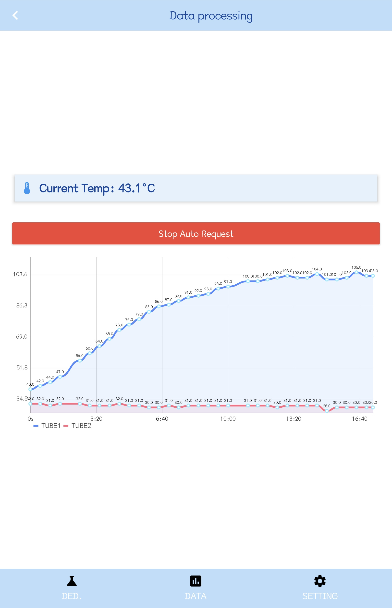
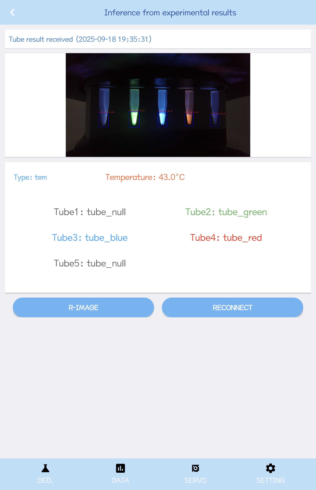
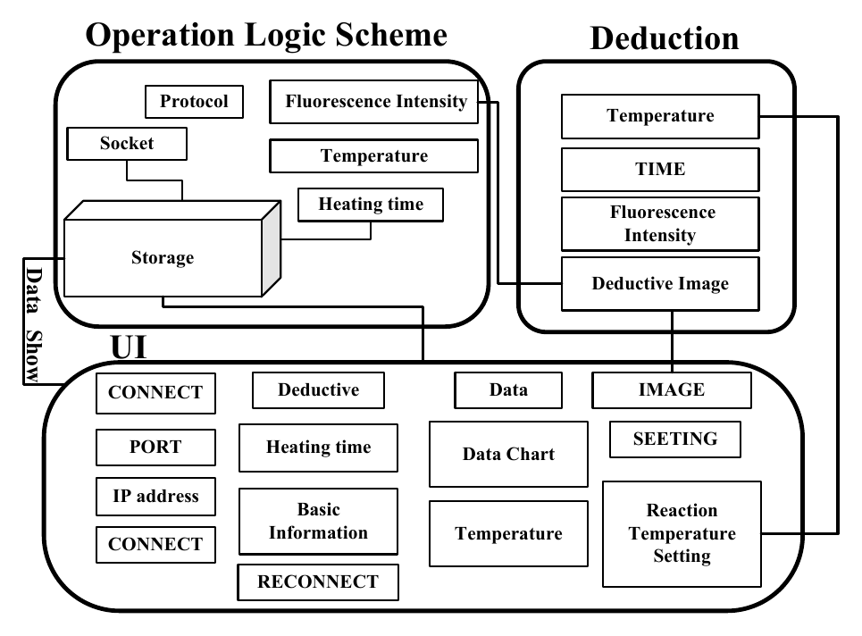
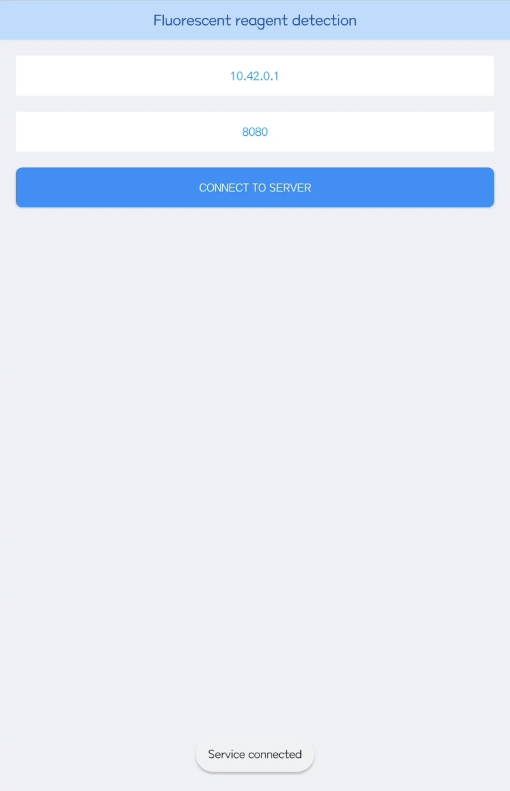
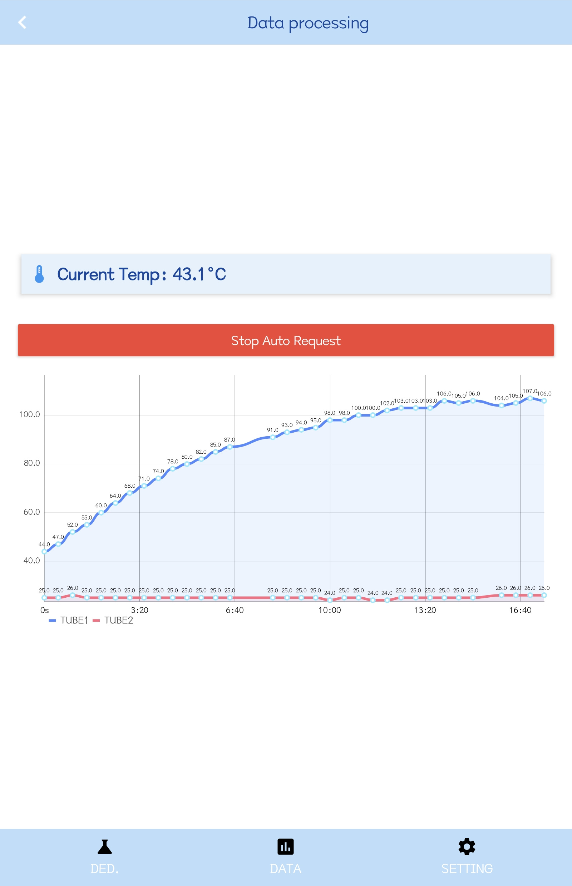
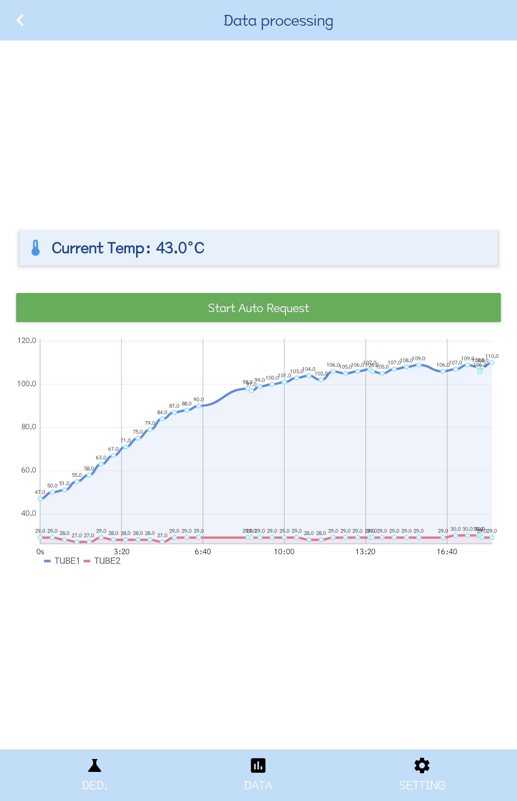
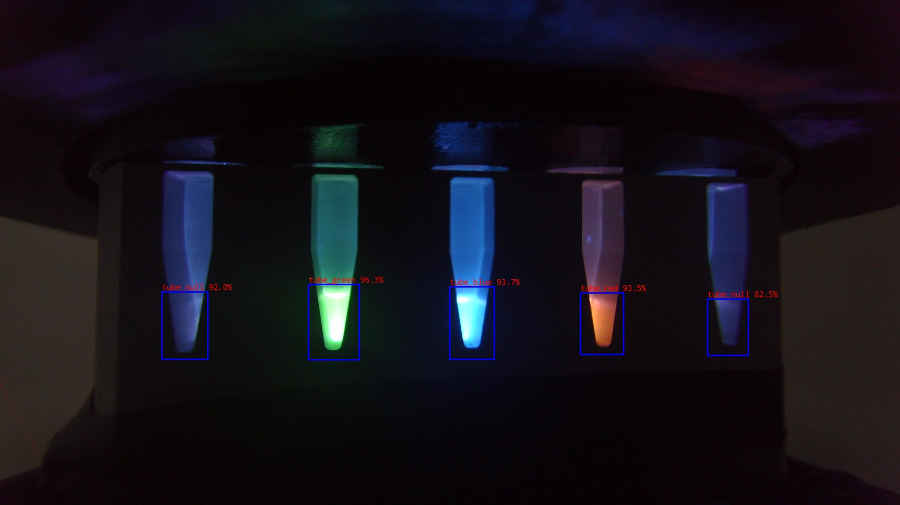

Overview
We developed an Android app that lets users operate the detector from a phone. It sends control commands over TCP and receives temperature readings, fluorescence data, images, and tube labels from the AI Box. Image processing runs on the AI Box; the app handles interaction, communication, and display.
Six core functions
Connect the device
Enter the AI Box IP address and port, establish the TCP connection, and reconnect when needed.
Configure a run
Set heating time and temperature controls. The second generation adds separate control switches and servo commands.
Monitor the reaction
Follow the heating countdown and temperature returned by the device.
Visualize fluorescence
Display the two received curve values as TUBE1 and TUBE2 over time.
Receive analysis results
Request an image and display the tube labels returned by device-side analysis.
View and save images
Inspect the acquired image in the app and retain it through the image-viewing and saving functions.
One data flow
- 1Connect over Wi-Fi
- 2Send parameters
- 3AI Box acquires and analyzes
- 4Return temperature, curves, images and labels
- 5App displays results
Developing alongside the detector
The mobile interface began with device connection and expanded to support control, reaction monitoring, acquisition, and result viewing.
- Stage 1
Establishing the connection
Need: a direct mobile interface for connecting to the instrument. Added: the app interface and device communication for sending basic commands.
- Stage 2
Displaying the reaction
Need: visibility into temperature, elapsed time, and fluorescence. Added: heating countdown, temperature display, and live curves; separate control switches in the second generation.
- Stage 3
Presenting the results
Need: viewing the acquired image alongside device-side analysis. Added: two-tube results in the first generation, then five color-coded labels and servo control in the second.




Architecture


The mobile app and AI Box communicate over a local Wi-Fi network. The connection screen shown uses 10.42.0.1 and port 8080. The Android app acts as a TCP client and sends UTF-8 JSON control commands. Each message contains an eight-byte header followed by its payload. Two big-endian 32-bit integers in the header specify the payload length and message type, where 0 denotes text and 1 denotes an image.
Mobile app
Written in Java, the app handles connection, countdown timing, temperature and servo commands, and image and curve display. NetworkService processes TCP messages, while MainActivity manages interaction and display. Other teams may adapt the communication parser and MPAndroidChart plotting logic by changing the device protocol and interface bindings.
AI Box
The device integrates temperature control, optical acquisition, mechanical control, and image analysis. It receives commands from the app and returns status data, images, and results.
Wireless communication
Both app generations use get_image, get_tem, and set_tem. The second generation also supports set_tem43, set_tem90, and set_servo. Text responses contain type, content, and an optional timestamp; the app displays the returned temperature, fluorescence values, images, and tube labels.
Image analysis and results
The AI Box processes fluorescence images, and the app displays the returned image and tube labels. The second-generation app maps codes 0, 1, 2, and 3 to green, red, blue, and empty labels. Their biological interpretation follows the assay.
Validation
Case 01 · Connection
Device connection and acquisition
The connection screen uses the AI Box address 10.42.0.1 and port 8080. After the connection is established, the app displays the service status and can enter the data-acquisition workflow.

Temperature and fluorescence-curve display
The data screen displays the current temperature and updates two fluorescence curves over elapsed time. The two recorded screens show temperatures of 43.1 °C and 43.0 °C. TUBE1 and TUBE2 values update during acquisition.




Image results and five tube labels
The result screen receives an image from the AI Box and displays five tube labels. In the example shown, Tube2 is labelled tube_green, Tube3 tube_blue, Tube4 tube_red, and Tube1 and Tube5 tube_null. The screen also shows a temperature of 43.0 °C.


Reusability
We integrated device control, reaction parameters, and detection status into the mobile interface. Users can connect the device, configure parameters, monitor the reaction, and view results without switching between separate programs.
The operating screen groups the heating time, temperature-control switches, and image requests. Connection status, temperature, and two-channel fluorescence curves update with data returned by the device. Other teams may reuse the communication parser, curve display, and result-display modules by adapting the commands and field mappings to their device protocol.
Build from source
- Open one generation directory as a separate Android Studio project.
- Select JDK 17 as the Gradle JDK and install Android SDK Platform 34.
- Synchronize Gradle, then select the
appconfiguration and run on Android 7.0 / API 24 or later.
The projects use Gradle 8.2 and Android Gradle Plugin 8.2.0. From the selected project directory in PowerShell:
.\gradlew.bat assembleDebugThe corresponding server and model require separate configuration. Read the full build and verification notes.
User Guide
Choose the illustrated manual for your app generation. Both guides cover the available installation, connection, monitoring, image and recovery instructions, and identify information still to be supplied. Full acquisition and device control require a compatible AI Box server on a network reachable from the phone.
A · First-generation manual
First-generation app
A two-page English PDF covers the first-generation connection, two-series data display, image requests, saving and reconnection workflow. Missing device details are marked in the guide.
Download first-generation APK ↗B · Second-generation manual
Second-generation app
A two-page English PDF covers connection, monitoring, five tube labels, image saving and the Servo screen. Missing device details and the chart-version difference are marked in the guide.
Download second-generation APK ↗Hardware resources: Hardware manual (to be added) · Hardware operation video (to be added). These temporary links open the Hardware page; final manual and video entries will be added here.
Quick start
- Install. Download the matching APK for Android 7.0 / API 24 or later. Both supplied app generations declare version 1.0.
- Connect. Start the compatible AI Box server, join its network, and enter the actual IP address and port. The recorded setup uses
10.42.0.1:8080. - Configure and monitor. Set heating time and the controls supported by the device and assay. Confirm returned status and temperature; inspect the curve labels available in your app build. Follow the generation-specific manual for version differences.
- Request and inspect. Request an image, inspect the returned tube labels, and use image viewing or saving as needed. Interpret labels according to the assay.
If the connection or data does not update
Check that the device server is running, the phone can reach its network, and the IP address and port match the device. Reconnect and request an update. Empty or unchanged plots alone do not establish a negative assay result. Record the app generation, Android version, and observed status when reporting an issue.
Open Source
The repository provides the Java source projects for both app generations, Gradle configuration, a README, and TCP/JSON protocol documentation under the Apache License 2.0. Dependencies keep their own licenses and attribution requirements.
Supplied APK downloads
First generation
Version 1.0 · Android 7.0+com.chuangxin.socket_test
Two-tube result display.
Second generation
Version 1.0 · Android 7.0+com.chuangxin.socket
Five tube labels, servo control and two temperature-control switches.
Both APKs are team-supplied binaries with the debuggable manifest flag enabled; they were not rebuilt from the repository during publication. File hashes and package metadata are listed in the download metadata. A reachable download does not establish successful installation or device operation.